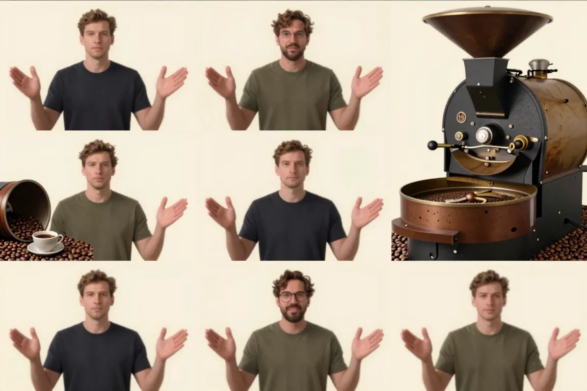

веб · 2022–2023 · также: Мем DALL-E mini, Сетка Craiyon, Сетка из клякс
Сетка 3x3 из маленьких смазанных картинок в ответ на глупый текстовый запрос, с искажёнными лицами и мягкими формами. Стала вирусной в 2022 году благодаря бесплатной модели изображений низкого разрешения.

Главная идея
Шутка — это разрыв между простым запросом и мягкой неправильной картинкой; смазанность и есть формат.
Принципы дизайна
Раскладывайте 9 картинок сеткой 3x3 из плиток 256px с зазором 4px и без внешних полей.
Пусть каждая плитка показывает размытие 1–2px и заметный узор блоков JPEG по 8px.
Искажайте одну деталь в каждой картинке: лицо, руку или вывеску с ложными буквами.
Ставьте запрос подписью над сеткой моноширинным 20px, строчными, в кавычках.
Рисуйте вокруг сетки тёмную рамку 1px на простом кремовом фоне (#F4EFE6).
Берите цвета мутного коричневого, зелёного и бледного неба; избегайте чистого белого и чистого чёрного в плитках.
Показывайте под сеткой маленькую оранжевую кнопку, например Run, высотой 40px.